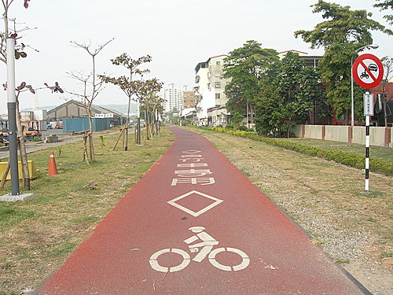

河東獅自行車隊騎乘路線
壹、平日休閒健身
一、路線規劃：
Ａ路線(愛河線)：休閒路線
河東路大門─愛河自行車道─愛河之心─愛河自行車道─河東路大門（全程約10公里）

@真愛碼頭
@愛河五福橋
@愛河旁水漾咖啡吧
Ｂ路線(中山大學線)：休閒+運動路線
河東路大門─愛河─元亨寺─壽山動物園─中山大學後門─中山大學翠亨山莊─中山大學行政大樓─中山大學隧道─漁人碼頭─駁二真愛碼頭自行車專用道─愛河─河東路大門（全程約10公里）
@中山大學行政大樓
@中大山學隧道
@漁人碼頭
@駁二真愛碼頭自行車專用道

@真愛碼頭

Ｃ路線(山海宮線)：運動路線
河東路大門─元亨寺─壽山動物園─中山大學後門─中山大學後門─中山大學老師宿舍─中山大學後山─中山大學外文學院─鼓山國小柴山分校─山海宮─中山大學行政大樓─中山大學隧道─漁人碼頭─駁二真愛碼頭自行車專用道─愛河─河東路大門（全程約13公里）
@山海宮
@山海宮前廣場係車友休息賞海之熱門景點
@從山海宮騎回主路線有一點點挑戰性
@早起之柴山彌猴坐於路旁觀賞形形色色之單車客及單車
@往左為通往山海宮，往右則通大自然及鳥語花香路線
@山腰旁之二棟建物即為文學院與藝術大樓，遠方山頂即為雷達站
Ｄ路線(鳥語花香1)：挑戰級路線
河東路大門─大公路橋─萬壽山公園牌樓─中山大學後門─中山大學老師宿舍─中山大學後山─中山大學外文學院─鼓山國小柴山分校─鳥語花香咖啡─中山大學行政大樓─中山大學隧道─漁人碼頭─駁二真愛碼頭自行車專用道─愛河─河東路大門（全程約13公里）
@鳥語花香頂點之休息區
Ｅ路線(鳥語花香2)：挑戰級路線
河東路大門─愛河─元亨寺─壽山動物園─中山大學後門─中山大學老師宿舍─中山大學後山─中山大學外文學院─鼓山國小柴山分校─鳥語花香咖啡─中山大學行政大樓─中山大學隧道─漁人碼頭─駁二真愛碼頭自行車專用道─愛河─河東路大門（全程約15公里）
@叉路右邊通鳥語花香線，左邊通大自然線
Ｆ路線(大自然線)：挑戰級路線
河東路大門─大公路橋─萬壽山公園牌樓─中山大學後門─中山大學老師宿舍─中山大學後山─中山大學外文學院─鼓山國小柴山分校─大自然─中山大學行政大樓─中山大學隧道─漁人碼頭─駁二真愛碼頭自行車專用道─愛河─河東路大門（全程約13公里）
@大自然線之終點即為大自然土雞城
@大自然之終點山海景觀一級棒
@精神領袖愛車美利達X5型
@美利達登山車510型基本款
@冠軍二號主人與精神領袖合影
@下大自然之斜坡有四層，皆非常陡峭，應注意騎乘安全
Ｇ路線(18公王廟)：同前--18王公廟--英國領事館--哨船頭公園(壹號船渠)--旗津渡輪口--漁人碼頭--駁二港口自行車專用道--同前
@18王公廟
@上18王公廟之陡坡，應注意安全
@二級古績英國領事館
@廟前廣場為賞高雄港之最佳景點
@遠眺18王公廟及英國領事館

@壹號船渠為觀賞船舶進出港口之最佳景點
@旗津渡輪站，船票10元，自行車5元，如有時間，可前往旗津自行車專用道賞海景
H路線(雷達站)：最高挑戰級路線
河東路大門─大公路橋─萬壽山公園牌樓─中山大學後門─中山大學老師宿舍─中山大學後山─中山大學外文學院─鼓山國小柴山分校─雷站─中山大學行政大樓─中山大學隧道─漁人碼頭─駁二真愛碼頭自行車專用道─愛河─河東路大門（全程約16公里，約150公鐘）
@從遠處眺望雷達站（即柴山山頂最高點，約海拔350公尺高)
@山頂雷達站景觀
@往雷達站之路況良好，林蔭蔽天，涼爽宜人

(後記：大年初五，吃飽無事做，一大早騎了五個景點拍了上開相片，
相片景色差強人意，尤其找不到漂亮單車入鏡，希望下次能以精神領袖BLUE或貓哥之愛車入鏡，能以河東獅車隊穿本隊車衣之相片更佳，希望來日大家能提供其他漂亮相片更換）
二、集合時間地點：
每日17：15分於河東路大門口集合，17：20出發，不另行通知，逾時請自行前往，並以電話聯絡，於山上會師。
貳、假日出遊踏青
河車獅隊除平日休閒健身外，並利用例假日或休假日（忙裡偷閒）前往台灣各地踏青、旅遊、長征等行程，迄今已舉過「高雄、屏東百公里逍遙遊」、「旗津踩風自行車逍遙遊」、「賽嘉自行車部落巡禮」、「美利達九六年高雄單車逍遙遊」、「彰化長青自行車道登高挑戰」、「北大武自行車逍遙遊」等活動，現另籌劃「河東獅旗津自行車道大會師」、「東海岸長征」、「大、小金門、大武山巡禮」、「墾丁逍遙遊」等活動。
聯絡電話: 07 - 2692557 。 0912- 338755 朱小姐 營業地址: 高雄市苓雅區海邊路30-1號 營業時間: 早上 13:00~ 晚上09:30 (週一店休) E-mail: jia0619@gmail.com
我們現在也有在經營網拍喔！
http://class.ruten.com.tw/user/index00.php?s=ohgodspeed
HI,親愛的河東獅友們， 又到了秋高氣爽的單車季， 記得有空與超哥去山海宮欣賞夕陽美景喲。 並在此號外預告， 12月河東獅將舉辦奮起湖單車遊， 有興趣的朋友們，記得該練車囉